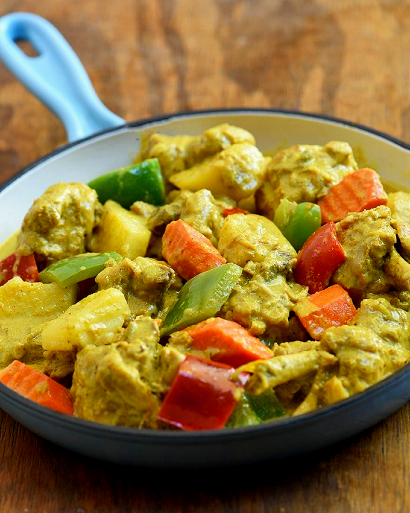

Back to Homepage
Chicken Curry

Description
Our Filipino-style Chicken Curry is deliciously creamy because of coconut milk, and it is a well-loved chicken dish in the Philippines.
Ingredients
- 1 kilo chicken
- 2 medium sized potatoes chopped
- 1 big carrot sliced
- 1 tbsp garlic minced
- 3 stalks celery cut into 2 inches length
- 1 medium onion chopped
- 1 small red bell pepper cut into cubes
- 2 tbsp fish sauce
- 1 cup coconut milk
- 2 tbsp curry powder
- 1 thumb ginger cut into strips
- 1 cup water
Steps
- Cut the chicken into pieces. Leave the chicken bone-in. If you prefer boneless chicken meat, then de-bone the chicken.
- Heat up a deep pot and add the oil.
- Fry the potato and carrots for 2 minutes and set aside
- Sauté Chicken together with garlic, onion and ginger.
- When garlic is light brown in color add fish sauce, and curry powder
- Stir well then add water then cover the pot and lower the heat to medium and simmer until the chicken is tender.
- Once the chicken is cooked add the red bell pepper, celery, carrot and potato then simmer for 5 minutes
- Add the coconut milk and mix well. Simmer for another 5 minutes.
- Serve hot with rice.